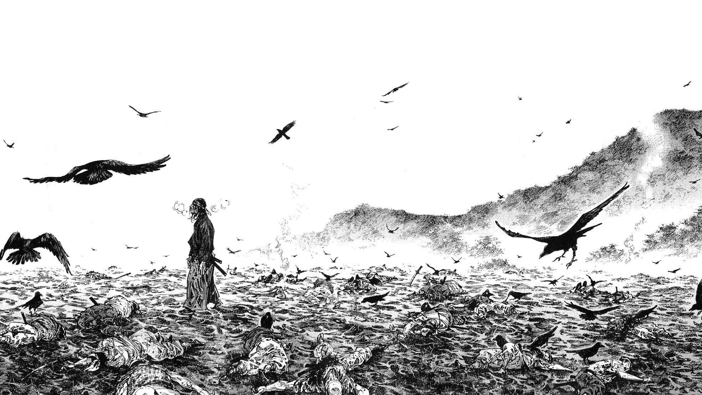
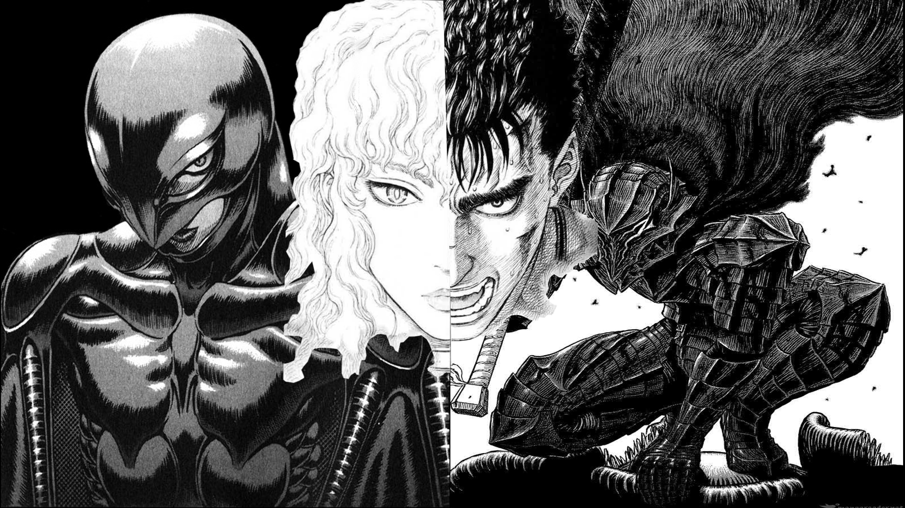
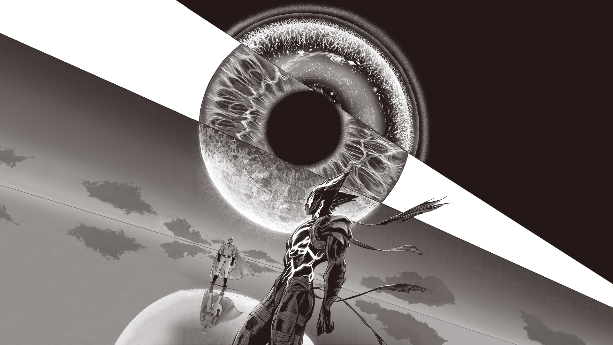

Vagabond
Vagabond é um mangá de ação e drama histórico criado por Takehiko Inoue, baseado no romance Musashi de Eiji Yoshikawa. Publicado pela Kodansha na revista Morning desde 1998, a obra reinterpreta a vida do lendário espadachim japonês Miyamoto Musashi, explorando sua busca por autoconhecimento e iluminação através do caminho da espada. Considerado um dos maiores mangás de todos os tempos, destaca-se por sua arte realista e profunda reflexão filosófica.
Arte de Vagabond


Beserk
Berserk é um mangá de fantasia sombria criado por Kentaro Miura e serializado desde 1989 pela editora japonesa Hakusensha nas revistas Animal House e Young Animal. É amplamente reconhecido por sua arte detalhada, narrativa trágica e temas maduros de violência, ambição e destino. Após a morte de Miura em 2021, a série passou a ser continuada sob supervisão de Kouji Mori e do Studio Gaga.
Arte de beserk

One Punch Man
One Punch Man é um mangá japonês criado por ONE e ilustrado por Yusuke Murata. A série combina ação, comédia e sátira de super-heróis, acompanhando um protagonista tão poderoso que derrota qualquer inimigo com um único soco. Ganhou destaque global por seu humor metalinguístico e arte de alta qualidade.
Arte de one punch man
